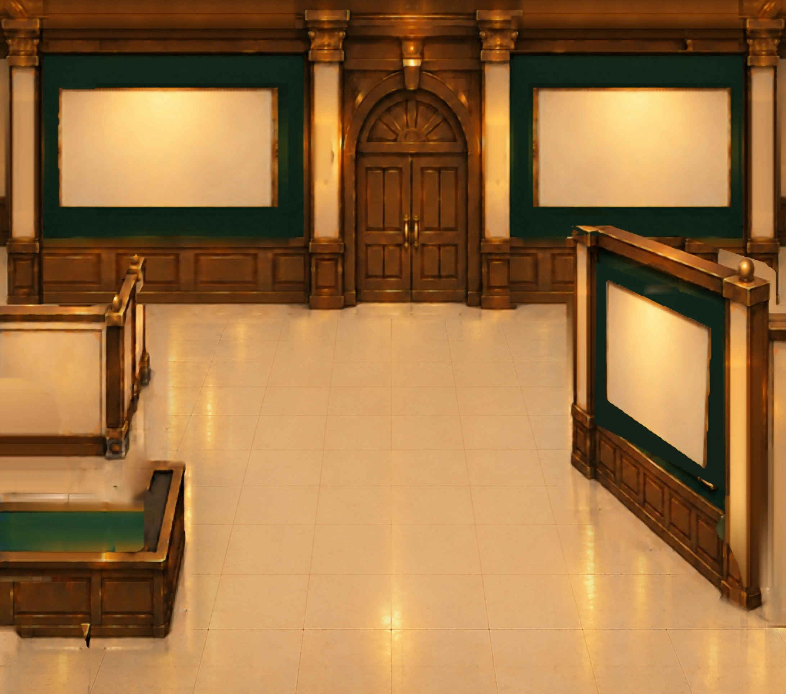
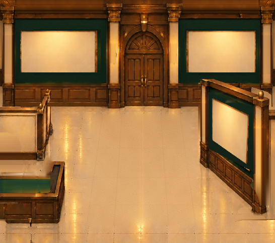

「とっておき美術館」エントランス背景
承認済みの v10と同じ建築構図を保ち、AI超解像と高解像度の床素材を部分的に適用した画質改善候補です。右手前の壁・扉・柱の位置は再設計していません。
スライダーで比較

左：現行 v10右：画質改善 v16
全体を並べて確認

v16はゲーム内の隔離ブラウザで読み込み／描画を確認済み。ただし高解像度化ですべての元画像の粗さが消えるわけではなく、現在は監修用候補です。作品写真、保存データ、公開ゲームは変更していません。